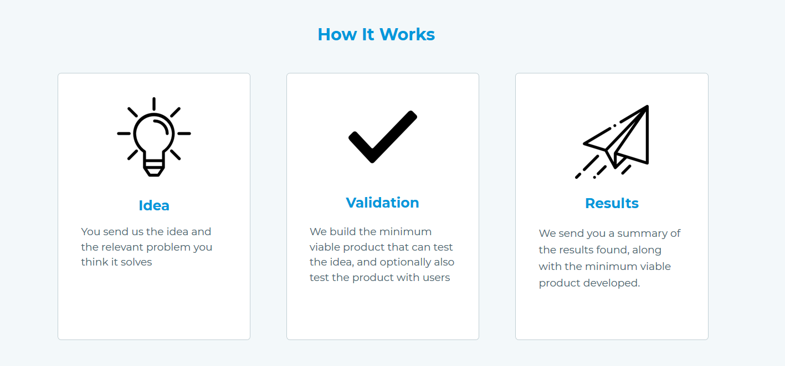

    <div id="portfolio-page" class="portfolio-page-content">
    <div class="container">
        <div class="portfolio-nav">
            <div id="portfolio-close-button" class="portfolio-close-button">
                <a href="#portfolio"><i class="fa fa-close"></i></a>
            </div>
        </div>

        <div class="portfolio-title">
            <h1>No More Bad Ideas</h1>
        </div>

        <div class="row">
            <div class="col-sm-7 col-md-7 portfolio-block">
                <div class="owl-carousel portfolio-page-carousel">
                    <div class="item">
                        
                    </div>
                    <div class="item">
                        
                    </div>
                </div>

                <script type="text/javascript">
                    jQuery(document).ready(function($){
                        $('.portfolio-page-carousel').owlCarousel({
                            smartSpeed:1200,
                            items: 1,
                            loop: true,
                            dots: true,
                            nav: true,
                            navText: false,
                            margin: 10
                        });
                    }); 
                </script>
            </div>

            <div class="col-sm-5 col-md-5 portfolio-block">
                <!-- Project Description -->
                <div class="block-title">
                    <h3>Description</h3>
                </div>
                <ul class="project-general-info">
                    <!--<li><p><i class="fa fa-globe"></i> <a href="http://www.nomorebadideas.com" target="_blank">NoMoreBadIdeas.com (dead now)</a></p></li>-->
                    <li><p><i class="fa fa-calendar"></i>Early 2018</p></li>
                </ul>

                <p class="text-justify">I have a passion for validating ideas, so No More Bad Ideas was meant to be a service
                to help others validate their ideas. The value hypothesis was that people had ideas and wanted to know
                whether they were good enough to pursue.</p>
                <!-- /Project Description -->

                <!-- User & Market Research -->
                <div class="block-title">
                    <h3>User & Market Research</h3>
                </div>
                <p class="text-justify">In a meta fashion, I wanted to validate this product idea itself. There were
                similar services out there already, but they were more about building someone's idea for them; however,
                their existence and seeming success supports the idea that consumers find value in services that can
                build upon their ideas. Nonetheless I still did customer interviews and found that many people have ideas
                but don't have a deep urge to pursue them. If they do, they usually are (possibly too) confident and attached
                to their idea that they don't see the need for a validation service.</p>
                <!-- /User & Market Research-->

                <!-- Execution & Methodology -->
                <div class="block-title">
                    <h3>Execution & Methodology</h3>
                </div>
                <p class="text-justify">I had spun up a quick landing page prior to customer interviews (an imprudent move).
                After customer interviews, I realized it would be best not to pursue this idea. Even though I had already
                    built the website, I did not fall prey to the <a href="https://en.wikipedia.org/wiki/Sunk_cost">sunk cost fallacy</a>
                and decided to abandon the idea because it would not provide value to people.</p>
                <!-- /Execution & Methodology-->

                <!-- Outcome -->
                <div class="block-title">
                    <h3>Outcome</h3>
                </div>
                <p class="text-justify">I saved hours of marketing and development that would have led to a dead-end.</p>
                <!-- /Outcome-->

                <!-- Lessons -->
                <div class="block-title">
                    <h3>Lessons</h3>
                </div>
                <p class="text-justify">This was a case where customer interviews proved extremely useful and clearly
                indicated whether something was a problem or not. Additionally, while a product may logically help users,
                it's important to consider the emotions behind how they act; customers want a product to make them feel
                good, and telling a customer that their idea isn't great doesn't make most people feel great.</p>
                <!-- /Lessons-->

            </div>
        </div>
    </div>
</div>
